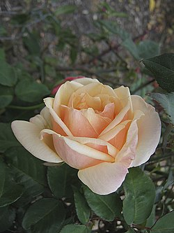
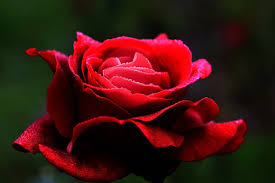

La rosa blanca simboliza la pureza y la inocencia. Las rosas blancas suelen ser la flor más elegida por las novias para la confección de sus ramos. El blanco simboliza perpetuidad, algo que durará toda la vida. es el color que resulta de la combinación del rojo y el blanco. Se trata de un rojo suave que también se conoce como rosado. Por ejemplo: “Le regalé a mi mujer una camisa de color rosa”, “Los jugadores del equipo argentino sorprendieron al salir al campo con camiseta rosa”, “A mi hija le encanta utilizar un moño rosa en el cabello”.A nivel simbólico, el rosa suele asociarse a lo femenino. Dicha vinculación surgió en el siglo XIX, cuando comenzó a desarrollarse la costumbre de vestir a las niñas recién nacidas de color rosa y a los varones, de celeste. De este modo, en la actualidad se considera que los productos rosas están orientados a las mujeres.
Historia y cultivo de la rosa. La rosa han sido desde la noche de los tiempos la reina de las flores. Los primeros datos de su utilización ornamental se remontan a Creta (siglo XVII a. de C.). La rosa era considerada como símbolo de belleza por babilonios, sirios, egipcios, romanos y griegos
El género 'rosa' es un término referido a un conjunto de arbustos espinosos y abundantes en flor. Pertenecientes a la familia de las rosáceas, reciben el nombre de rosa las flores de este grupo de plantas. Del latín 'rosa', significa la flor del rosal.
El origen de las rosas también está rodeado de leyendas que intentan explicar, de forma especial, el nacimiento de esta peculiar flor. Por ejemplo, un antiguo mito griego atribuye el origen de las rosas a un truco de la diosa Cibeles, también conocida como Frigia. Ella, al ver que la belleza de Afrodita no tenía rival, decidió crear esta delicada y hermosa flor para que al fin la diosa del amor y la belleza tuviera una digna competencia.
volver a inicio